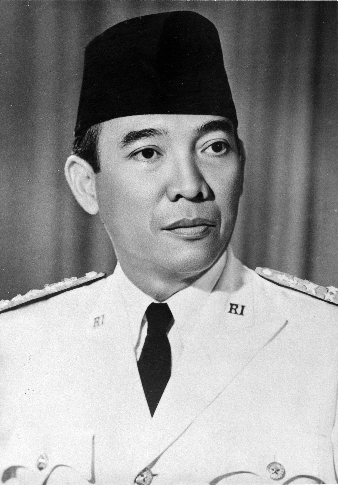

Sejak awal kemerdekaan, ada tujuh tokoh yang pernah mengemban tugas sebagai Presiden Republik Indonesia. Selaku pemimpin tertinggi, seorang presiden memiliki tanggung jawab besar terhadap kemajuan dan kesejahteraan rakyatnya. Nah, kali ini, kita akan menyelami lebih dalam profil tujuh tokoh yang pernah menjadi Presiden Republik Indonesia. Yuk, simak lebih lanjut artikelnya!
Ir. Soekarno

Presiden pertama Indonesia, Soekarno, lahir di Surabaya pada 6 Juni 1901. Beliau adalah salah satu proklamator kemerdekaan Indonesia pada 17 Agustus 1945. Menjabat dari 1945 hingga 1966, Soekarno memimpin Indonesia melalui masa-masa sulit, termasuk Agresi Militer Belanda II. Keberanian dan kharismanya membuat dunia internasional mengakui dirinya sebagai pemimpin sah Indonesia.
Soeharto
Jenderal Besar TNI (Purn.) Soeharto, Lahir pada 8 Juni 1921 di Kemusuk, Yogyakarta, Soeharto menjadi presiden kedua melalui sidang istimewa MPRS pada tahun 1967. Di masa pemerintahannya, dikenal sebagai masa Orde Baru, Soeharto memimpin dengan kebijakan stabilisasi politik dan program pembangunan nasional, seperti Pembangunan Lima Tahun (Pelita) dan Pembangunan Jangka Panjang.
B. J. Habibie
Prof. Dr.-Ing. Ir. H. Bacharuddin Jusuf Habibie, FREng. Lahir di Parepare pada 25 Juni 1936, Bacharuddin Jusuf Habibie merupakan seorang tokoh teknologi, menjadi presiden setelah pengunduran diri Soeharto pada tahun 1998. Meskipun masa jabatannya hanya berlangsung 1 tahun 5 bulan, Habibie berhasil mengatasi krisis yang melanda Indonesia.
Abdurrahman Wahid
Lahir di Jombang pada 7 September 1940, Abdurrahman Wahid adalah presiden keempat Indonesia. Bapak Abdurrahman Wahid ini juga kerap dipanggil "Gusdur". Dikenal sebagai Bapak Pluralisme, ia sangat menghargai keberagaman suku, agama, dan ras. Gus Dur juga memperjuangkan hak asasi masyarakat sipil dan hak kaum minoritas.
Megawati Soekarnoputri
Diah Permata Megawati Setiawati Soekarnoputri, lahir di Yogyakarta pada 23 Januari 1947, Megawati merupakan presiden wanita pertama dan satu-satunya Indonesia sampai saat ini. Memegang jabatan dari 2001 hingga 2004, ia menguatkan demokrasi dengan pemilihan presiden secara langsung dan mendukung berdirinya Komisi Pemberantasan Korupsi (KPK).
Susilo Bambang Yudhoyono
Lahir di Pacitan, Jawa Timur, pada 9 September 1949, Susilo Bambang Yudhoyono adalah presiden keenam terpilih pertama kali dalam dua periode. Selama kepemimpinannya, ekonomi Indonesia tumbuh stabil, utang negara terkendali, dan Indonesia memperluas hubungan internasional melalui kemitraan strategis.
Joko Widodo
Joko Widodo, atau kerap dipanggil "Jokowi", lahir di Surakarta pada 21 Juni 1961, Jokowi adalah presiden ketujuh sejak 2014 hingga saat ini. Karier politiknya dimulai saat ia menjabat sebagai Wali Kota Solo (2005-2012), setelah itu ia kemudian terpilih menjadi Gubernur DKI Jakarta pada 2012. Kepemimpinannya ditandai dengan upaya-upaya memajukan perekonomian dan pemerataan pembangunan.